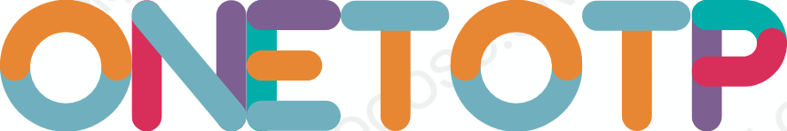

ONETOTP 字标 · 几何重建
按直线与圆弧重画，非自动描摹
原图（含水印） vs 几何重建

上＝原图 1:1 下＝几何重建 1:1
缩放到 3 倍看边缘
3 倍放大：直线是真正的直线，圆弧曲率均匀，没有任何锯齿
缩放表现
深色底
配色（5 色）
#E88733
橙
#70B0BE
蓝灰
#D7305B
玫红
#7D5F92
紫
#00ADA8
青绿
文件
文件
大小
说明
oneTotp-ONETOTP.svg
2.5 KB
888×148，18 条描边路径，全部是线段或圆弧
（旧的自动描摹版）
14.8 KB
已废弃：边缘锯齿、曲线不平滑
笔画宽度恒定 34px，所有笔画 = 直线段或标准圆弧。改粗细只改
stroke-width
，改色只改
stroke
。